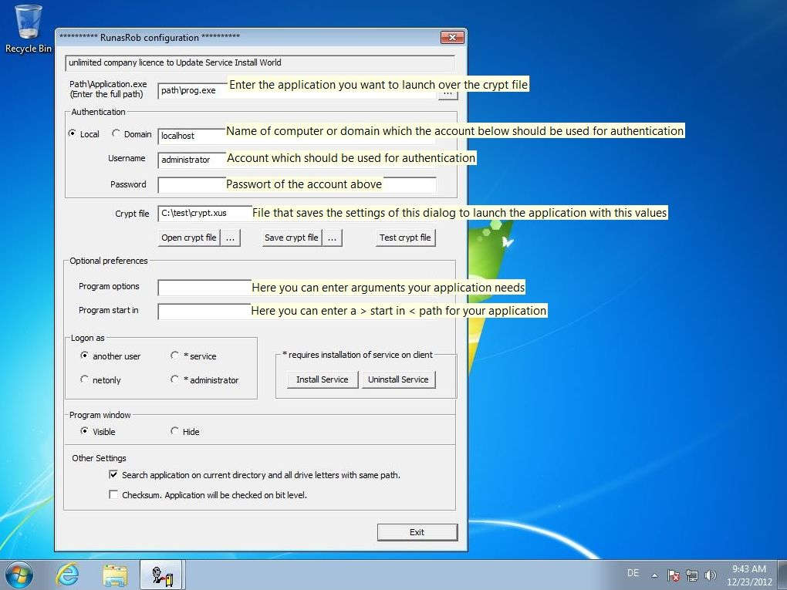

RunAsRob run as another user
RunAsRob run as another user
Run as different user startet ein Programm mit anderen Anmeldedaten
Um die Anwendung vom aktuell in Windows angemeldeten Benutzer als anderer Benutzer ausführen zu können, werden die Anmeldedaten aus einer verschlüsselten Datei gelesen.
Delegiere bestimmte administrative Aufgaben an Standardbenutzer, durch senden einer verschlüsselten Datei, in welcher das Programm für diese Aufgabe autorisiert ist.
Über diesen Weg können sie auch Software verteilen durch Bereitstellen einer verschlüsselten Datei, in welcher der Pfad zur setup.exe und Anmeldeinformationen gespeichert sind, um die Installation als Administrator zu starten.
Mit run as different user von RunAsRob, können sie einen Kollegen vertreten durch das Aufrufen des entsprechenden Programmes mit seinen Anmeldedaten aus einer verschlüsselten Datei.
Wenn sie unter dem Administrator Konto arbeiten müssen, können sie bestimmte Software oder einen Internet Browser mit eingeschränkten Rechten starten, um das Sicherheitsrisiko zu minimieren.
Als Administrator können sie ganz einfach Software testen und prüfen, ob sie unter einem Standardbenutzer läuft, ohne Ab- und Anmelden.

Path / application.exe:
Dieses Eingabefeld zeigt den Pfad der Anwendung im Cryptfile an welche über RunasRob gestartet werden soll. Hier können Sie diesen Pfad anpassen.
Authentication:
Anmeldeinformationen des Administrators welche im Cryptfile hinterlegt
werden um die Anwendung über diese Authentifizierung zu
starten.
Cryptfile:
Pfad der Cryptdatei welche die Informationen aus diesem Konfigurationsprogramm speichert.
Über die Crypt file Buttons können Sie eine Cryptdatei öffnen, speichern oder testen.
Sie müssen Änderungen am Cryptfile erst über den >> save crypt file button << speichern bevor die Änderungen getestet werden können.
Program options:
In diesem Feld können Sie Parameter oder Optionen eintragen
welche Sie Ihrer Anwendung mitgeben möchten.
Start in:
Pfad wo ihre Anwendung ausgeführt werden soll. Entspricht in einer Verknüpfung dem Wert >> Ausführen in <<
Logon as:
- another user >> Anwendung startet unter der Benutzerkennung aus dem Cryptfile.
- netonly >> Anwendung nutzt die Anmeldung aus dem Cryptfile nur für remote Verbindungen.
- service* >> Anwendung startet mit Administrator Rechten und erhöhten Privilegien aus dem lokalen System Account und umgeht dadurch den UAC Dialog
- administrator* >> Angemeldeter Benutzer wird eingeloggt als Mitglied der lokalen Administratoren für die autorisierte Anwendung. Mit dieser Option wird das eigene Profil und die Umgebung des aktuellen Benutzers verwendet. Der Benutzer muss deshalb vor dem Start der erlaubten Anwendung seine Anmeldedaten eingeben.
* Die letzten beiden Optionen setzen eine Installation des Dienstes von RunasRob voraus.
Sie können das über den Installationsbutton durchführen oder Sie rufen RunasRob mit der option /install auf >> runasrob.exe /install <<
Program window:
Visible macht das Programmfenster für Aktionen mit dem Benutzer sichtbar.
Setzen Sie die Option auf Hide um die Anwendung im Hintergrund laufen zu lassen.
Schnellanleitung RunasRob mit einer verschlüsselten Datei:
Starte ein Programm als eingeschränkter Benutzer mit Administratorrechte ohne den Dienst von RunAsRob zu installieren
- Starten Sie RunasRob.exe und press Enter um das Konfigurationfenster für verschlüsselte Dateien zu öffnen.
- Wählen Sie dort die Anwendung aus, welche über RunAsRob gestartet werden soll und
- geben Sie die Administrator Kennung ein, die Sie dafür verwenden möchten.
- Speichern Sie Ihr Cryptfile über >> Save crypt file <<.
- Prüfen Sie über >> Test crypt file << ihr soeben gespeichertes Cryptfile und ihre Anwendung sollte, unter den im Cryptfile eingetragenen Einstellungen, starten.
- Fertig. Schließen das Konfigurationsfenster von RunSsRob.
-
Starten sie >> IhrCryptFile.xus << über Drag and Drop auf RunAsRob.exe oder über eine Verknüpfung, Batchdatei oder Ähnlichem mit folgendem Befehl
>> runasrob.exe /cryptfile:”c:\yourpath\IhrCryptFile.xus” - Video example
Starte ein Programm als Administrator unter Standardbenutzer mit seinem eigenen Profil.
- Starten Sie RunasRob.exe und gehen sie in das Konfigurationsprogramm für encrypted files.
- Drücken Sie den Button >> install Service << um den Dienst von RunasRob zu installieren.
- Wählen Sie im Feld Path/Application.exe die Anwendung aus welche Sie als Dienst starten wollen.
- Tragen Sie in den Authentication Feldern lokale Administrator Anmeldedaten ein.
- Setzen Sie das Optionsfeld >> Logon as << auf administrator.
- Speichern Sie Ihr Cryptfile über >> Save crypt file <<
- Melden sie sich als eingeschränkter Benutzer an um das Cryptfile zu testen.
-
Der eingeschränkte Benutzer kann das xus Cryptfile starten über einen Doppelklick, über Drag and Drop auf RunAsRob.exe,
eine Verknüpfung, Batchdatei oder Ahnlichem mit folgendem Befehl >> runasrob.exe /cryptfile:”c:\yourpath\IhrCryptFile.xus” - Bevor die Anwendung startet wird der Benutzer nach seinen Anmeldeinformationen gefragt um diese Anwendung mit seinem eigenen Account und Profil als Mitglied der lokalen Administratoren zu starten.
- Video example
Kontakt:
Für Verbesserungsvorschläge, Fragen, spezielle Anforderungen oder Anpassungen schreiben sie uns.
runas@robotronic.de
Lizenz:
RunasRob ist nur für die private Verwendung frei.
Für Unternehmen und andere Organisationen gibt es auf den Organisationsnamen lizenzierte Versionen.
Bestellung RunasRob >>>
Download RunasRob >>>
Date: 2019-10-13
Datenschutz
Impressum